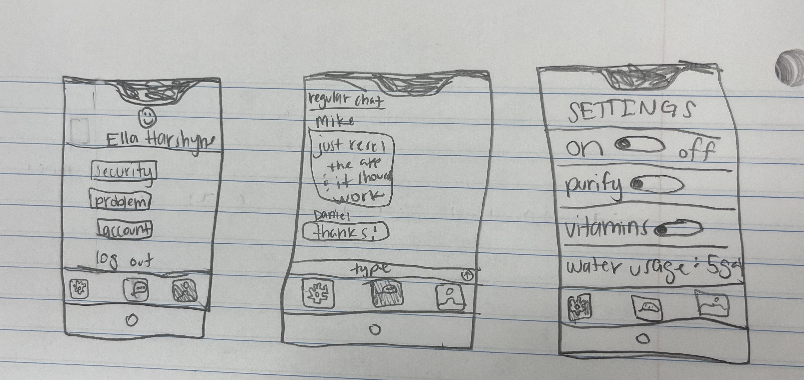

Problem Statement

There are filters for drinking water, with britas, as well as various shower head filters for bathing water, but there isn’t a filter for sink water, where you brush your teeth, wash your face, and shave. It is important to prioritize your personal hygiene, and a sink filter would be a big help to that.
Affinity Diagram

A bunch of different ideas that have been brought to surface regarding our product.
Sketches
3 examples of how the app can look from a user, manager, and employee point of view. The three screens are profile, chat, and settings.